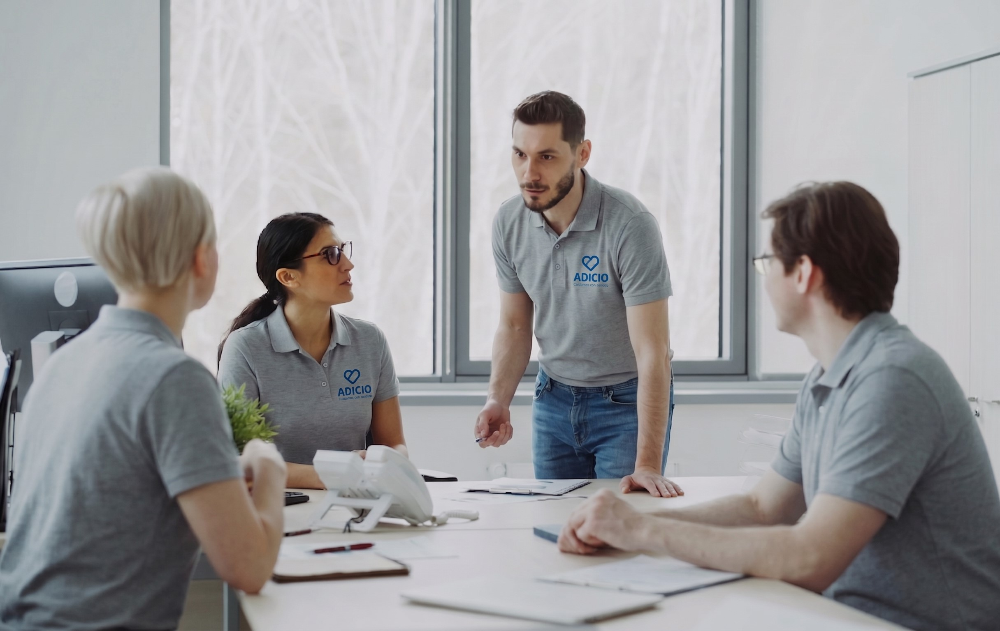

Pioneros en
Cuidado Inteligente.
Nacimos de una necesidad personal y crecimos con una misión colectiva: dignificar el cuidado de nuestros mayores a través de la calidez humana y la precisión tecnológica.

Un modelo interdisciplinario de gestión en salud domiciliaria
Adicio es un servicio profesional de gestión y seguimiento en salud, orientado a personas mayores que residen en su propio hogar y a sus grupos familiares.
Nuestro equipo está integrado por profesionales de enfermería, del derecho sanitario y de la gestión administrativa, con experiencia específica en el seguimiento de patologías crónicas, la coordinación con el sistema de salud y el asesoramiento a familias en el ejercicio de sus derechos como pacientes.
Nuestra propuesta se distingue del modelo tradicional de cuidado domiciliario porque no actuamos como prestadores de asistencia directa, sino como gestores: prevenimos complicaciones, organizamos el entorno del paciente, verificamos el cumplimiento del plan médico indicado y coordinamos los recursos sanitarios necesarios para garantizar la continuidad del tratamiento.
Cada familia cuenta con un Profesional de Salud de referencia, responsable del seguimiento clínico y la elaboración de informes periódicos; gestión administrativa especializada para trámites, recetas y provisión de medicación; y asesoramiento en derecho sanitario para resolver con claridad las situaciones que el sistema de salud no siempre resuelve por sí solo.
Adicio no reemplaza al médico de cabecera ni a los servicios de emergencia. Nuestro trabajo se centra en la prevención, la organización del cuidado cotidiano y la comunicación continua con la familia.
Adicio. Gestores de salud.
Nuestros Pilares
Lo que nos guía en cada decisión, cada día.
Empatía Radical
No solo cuidamos, acompañamos vidas. Entendemos cada historia individual para ofrecer un apoyo que resuene con el alma de cada persona.
Tecnología con Alma
Utilizamos la innovación digital para anticipar necesidades y garantizar seguridad, manteniendo siempre la calidez humana en el centro.
Autonomía Protegida
Creemos en el poder de la decisión propia. Fomentamos que cada persona comprenda su proceso y mantenga el control sobre su vida, respaldada por nuestra red de contención.
Claridad Humana
Nos comunicamos sin barreras ni tecnicismos médicos. Transformamos la complejidad del sistema de salud en un diálogo simple, accesible y transparente para toda la familia.
Presencia Equilibrada
Cuidamos el espacio vital del adulto mayor. Acompañamos sin invadir y orientamos sin imponer, logrando el balance perfecto entre asistencia constante y libertad personal.
Compromiso Integral
Estamos a tu lado en cada detalle, siempre. Brindamos una solución 360° que abarca desde la precisión de las gestiones administrativas hasta el abrazo emocional.

Nuestra Misión
Acompañar integralmente a personas y familias en su proceso de salud, desde sus necesidades reales, con cercanía, claridad y respeto. Brindamos orientación, asistencia y herramientas prácticas para que cada persona pueda transitar su enfermedad con autonomía, comprensión y apoyo continuo.
Nuestra Visión
Ser un modelo de referencia en acompañamiento integral en salud, creado desde la experiencia del paciente y su entorno, y replicable en todo el país. Queremos transformar la forma en que se vive y se acompaña la enfermedad, poniendo en el centro la escucha, la educación y el acceso a derechos.
Cuidamos el presente.
PROTEGEMOS EL FUTURO.
¿Quieres ser parte de nuestra historia?
Ya sea que busques cuidado para un ser querido o quieras unirte a nuestro equipo de profesionales, estamos aquí para escucharte.